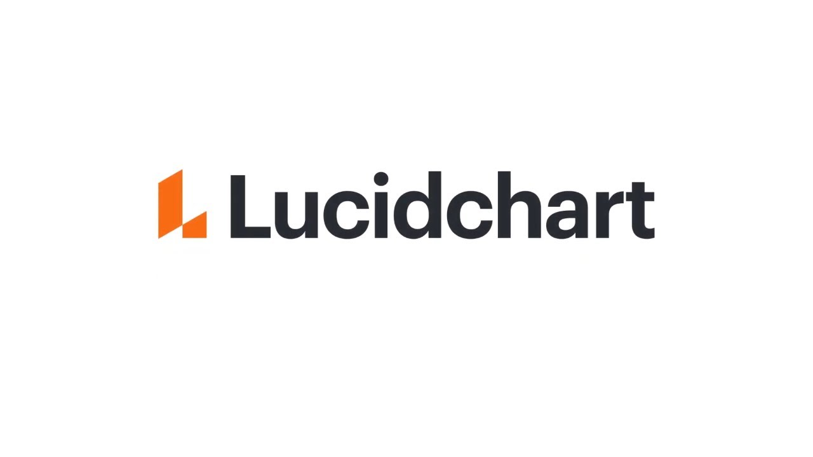
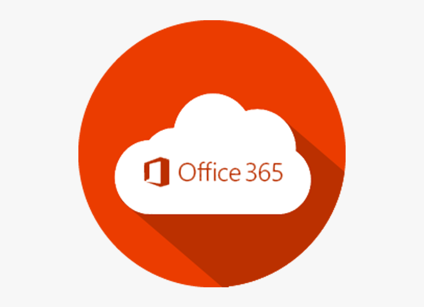

Resources and technologies
Visual Studio Code
Visual studio code by Microsoft is an open source software that allows user to use various programming language
in it such as python, java or html and is available on various platforms such as windows, Linux as well as macOS.
We are using this software for various reason such as it is having GitHub integration as well as supporting html,
CSS, and JavaScript. Visual studio code is free to use software and the version for this project will be version
1.48, and there is a lot of html editors that we could of such as sublime text 3 but, visual studio code was
easier to use by everyone.
LucidChart

Lucid chart is a web-based software that allows users to draw visuals such as concept drawings, how systems work
such as database and is free to use with a subscription fee. The group decided to use this since we needed to make
some concepts for user interface design before making the real thing. lucid chart is covered for student for RMIT
meaning the whole group has access to the pro model thereby any alternative such as draw.io will not be as useful
as the free version will not have as many features the group might want
GitHub
Git hub is a software that allows user to host their own software on their site and give users version controls
as well as many features that allow for collaboration. We are using this tool as it will allow all our group
members to contribute their own code to the project as well as its version control feature making it easier to
revert to an older version if something goes wrong. There are Alternative such as Source Forge, but we are not
using that as the group is not familiar with the software.
Microsoft office

Microsoft office includes a variety of things such as words, excel and teams which will be used for a variety of
things such as writing to planning and having group meeting, and we are going to need it since it has good
collaboration features which we would need to use since we will be doing a lot of planning, discussing and
scheduling. The software is covered for student, so it is free and alternatives to it is google suite, but it is not
as advanced as Microsoft option.
Group Contract
Ground Rules
- 1.Show up on Time
- 2.Make a significant contribution to group work
- 3.Always contact group members within 1 or 2 days
- 4.Help other group members who might need Help
- 5.When in meetings have your microphone on
Assignment specific task
- Julian: expected to work on html elements as well as working on various features of the assignment such
as working on the rating system
- Emma: help work on CSS of the webpage as well as various feature of the web app such as adding
randomized question and solutions and also the lead designer for the project such as creating concepts for what
it might look like and giving design directions.
- Siddas: Help work on the features with Emma and Julian such as working on randomized questions and
help create the rating system with other group members
- Wilson: Responsible for keeping and managing all the data of project such as our descriptions and
documents used for the project and have a role in programming the feature of a user improvement system.
- Theo: Responsible for testing and verifying if the features work as well as creating the layout
for the program and applying information on the webpage from our word document.
- Ahnaf:Responsible for Hosting the website as well as working on and refining the CSS and html elements
of the program. Also, will help in the creation of features such as the login page and rating system.
Outline of the specific process for dealing with unmet expectations or other problems that might arise.
Roles won’t be too specific to team members and we can easily swap roles if we need to so if a unwanted situation
occurs there will be at least 1 team member who is knowledgeable but if one group member who is knowledgeable in
area were to not show up we will prioritise on that area until the group members shows up again, and if it is
something technical such as the internet going off or a computer is broken, we have backup plans such as spare
laptops and mobile hot spots.
An agreed-upon method for peer feedback during the project so that problems can be addressed before the project
ends.
For peer feedback the group has decided to have a weekly rating system for monitoring a group members
participation and progress and each group members will give a short description on what a group member did well
and did not do well in.
Describe the expected frequency of responses.
The expected frequency of response will be daily as we will need to contact each other via messaging to let group
members know about progress and something a group member might have trouble with. When doing face to face meetings
online the frequency will be weekly once or twice to have a deeper discussion about progress and areas we need to
improve on.
Describe how you use tools in the context of the weekly workflow.
We will be constantly using Microsoft teams on a weekly basis to communicate with each other, and Microsoft words
to write down descriptions or plans we might have for the project. We will also using Microsoft excel to write
down dates and times for project that have a specific due date and will use GitHub to upload different version to
GitHub when making changes.
| Name |
Strength |
Areas to develop |
| Theo |
- Experince with working in a team
- Experince with user interfaces
|
- Programming skills
- Motivations
|
| Emma |
|
|
| Julian |
- Finishing task on time
- Github
|
|
Siddesh |
|
- Time management
- concentration
|
Wilson |
- Java Programming
- Web Teamwork
|
|
Ahnaf |
- Programming
- Team work
- Web Hosting
- Github
|
|
collaborative
Description
The workplace our group will collaborate is many such as GitHub which will allows us to iterate on our project and
track version, and everyone has access to it. We will also be using Microsoft teams to communicate with each other
via recorded video call or via chat to update or seek help about the project and everyone has access to Microsoft
teams. Another software we will be using it Trello which will allow us to organise our projects with the use of
board and track where each of the group members is at and is doing and our whole group has access to the tool and is
already assigned a task to do. Another tool is AWS that the group is going to use that will allow us to host our
final website. Currently at this stage only 2 members of the group are familiar with its use thereby making it
something that needs to be taught to the entire group very soon.